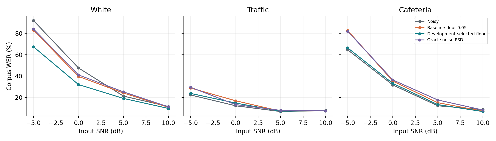
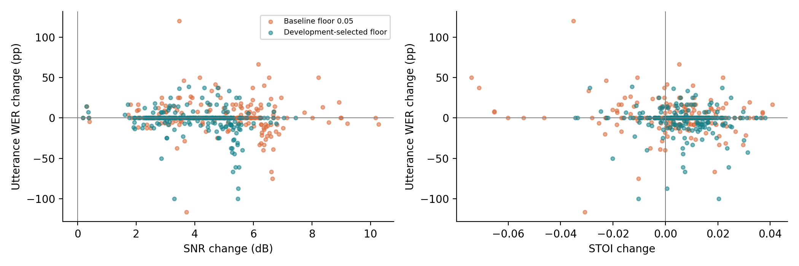

ELEC5305 · Final project
Speech Enhancement versus Speech Recognition
Evaluating STFT Wiener Filtering Under Noise
Xinyu Shen · SID 530137427
Research question
Does Wiener filtering that improves speech signal-to-noise ratio also improve intelligibility and speech-recognition accuracy? This project compares SNR, STOI and word error rate (WER), including the effects of noise estimation and a gain-floor modification.
Method
Speech is processed at 16 kHz using a 512-sample Hann STFT with a 128-sample hop. The method estimates speech power by non-negative spectral subtraction and applies Wiener gains with a minimum gain floor, retaining the noisy phase.
The baseline floor is 0.05. A floor of 0.35 was selected using development-set WER from four candidates: 0.05, 0.10, 0.20 and 0.35. A fixed pretrained Whisper tiny.en recognizer measures WER; no recognition model is trained.
The development set contains four utterances from four speakers. The test set contains 20 utterances from 10 different speakers. White noise and recorded traffic and cafeteria noise are evaluated at −5, 0, 5 and 10 dB, giving 240 test mixtures. Recorded noise uses separate development and test time segments.
Test results
SNR and STOI are averages across the test mixtures. WER is pooled across their reference words.
| Condition | SNR (dB) | STOI | WER (%) ↓ |
|---|---|---|---|
| Noisy input | 2.50 | 0.7945 | 28.28 |
| Baseline floor 0.05 | 7.24 | 0.7984 | 29.90 |
| Selected floor 0.35 | 6.56 | 0.8019 | 25.15 |
| Oracle noise PSD | 7.44 | 0.8003 | 30.39 |
Discussion
Higher SNR does not guarantee lower WER. The baseline increases average SNR but has higher pooled WER than the noisy input. The selected floor produces lower SNR than the baseline, but lower WER and slightly higher STOI.
The aggregate WER improvement is driven by white noise. For recorded traffic and cafeteria noise, selected-filter WER remains slightly worse than the unprocessed input. The small test set and reuse of noise recordings across separate time segments limit generalisation. The oracle is a diagnostic reference using actual noise information, not a practical system.
Results figures



Audio demonstrations
Open the four audio comparison examples. Each example includes clean, noisy, baseline, selected and oracle audio. Versions within an example share one gain for fair listening.
Presentation and code demonstration
Open or download the presentation video
Code and reproducibility
Download the repository, install the dependencies and inspect the available command-line options from the repository root:
python -m pip install -r requirements.txt python src/experiment.py --help python src/analyse.py --help python src/make_audio.py --help python src/demo.py --help
The commands above install dependencies and display usage; they do not run the full experiment.
- Python source code
- Input data and source information
- Measurements, metadata and figures
- Recorded code demonstration output
- Full report, references and detailed methodology
Sources and acknowledgement
Speech: LibriSpeech (CC BY 4.0). Recorded noise: DEMAND (CC BY-SA 3.0). See the report and data source records for attribution and details. AI assistance was used in code and writing preparation; the report documents the methodology and limitations.